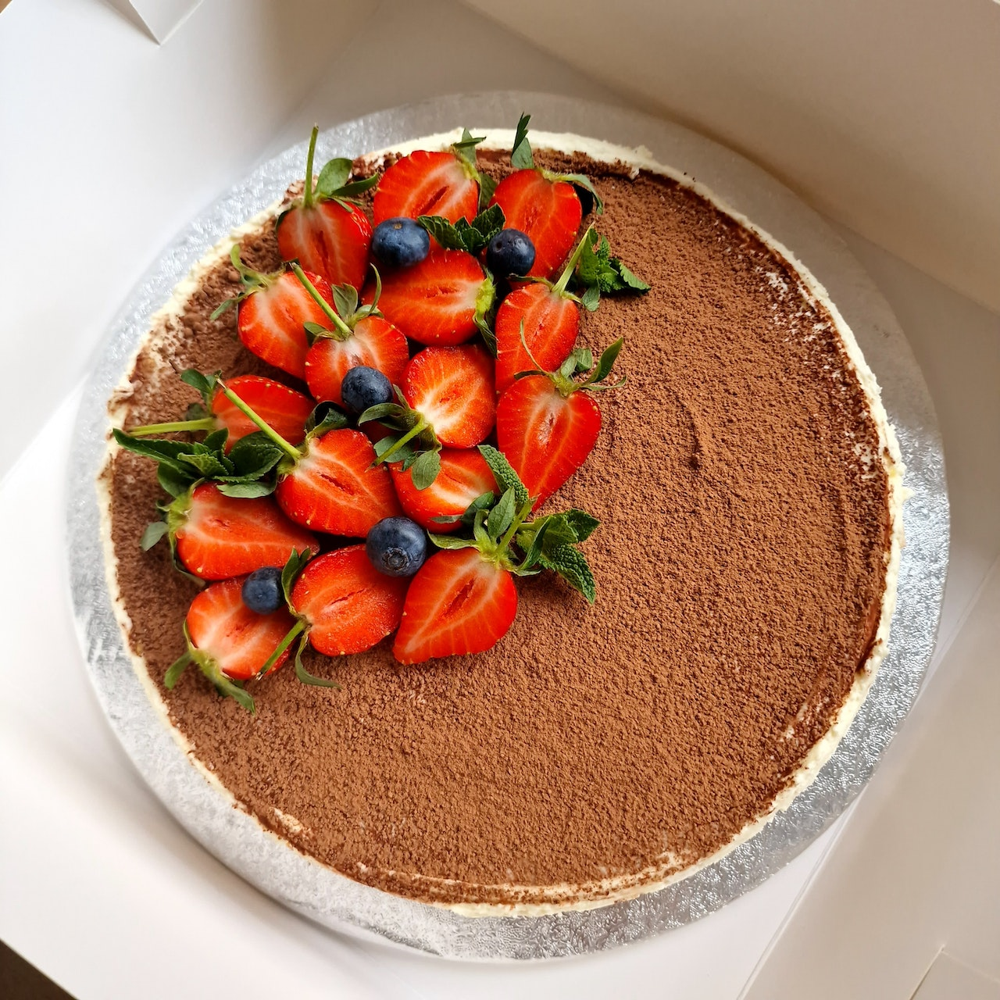

Tiramisu
15 Min.
simpel
07.12.2025
Zutaten für
| 600 | ml | Kaffee |
| 2 | EL | Zucker |
| 6 | EL | Amaretto |
| 4 | Eigelbe | |
| 70 | g | Zucker |
| 1 | Prise | Salz |
| 750 | g | Mascarpone |
| 100 | g | Schlagsahne |
| 250 | g | Löffelbiskuits |
| etwas Kakaopulver zum bestreuen |
Zubereitung
ca. 15 Minuten
Gesamtzeit ca. 15 Minuten
Kaffee kochen, im heißen Zustand Zucker zugeben und verrühren. Etwas
abkühlen lassen. Im warmen Zustand den Amaretto zugeben und die
Flüssigkeit beiseite stellen. Eigelb mit Zucker und Salz mind. 2 Min
schaumig schlagen. Mascarpone und 3 EL der Eigelb-Creme mit einem
Schneebesen KURZ glatt rühren. Restliche Creme vorsichtig
unterheben. Sahne steif schlagen und zuletzt unter die Creme heben.
Löffelbiskuits einzeln kurz in den abgekühlten Kaffee tauchen und
dicht an dicht den Boden der Auflaufform (ca.23x33cm) bedecken.
Etwas weniger als die Hälfte der Mascarpone-Creme darauf geben und
glatt streichen. Erneut eine Schicht getränkter Löffelbiskuits
darauf verteilen und leicht andrücken. Restliche Creme in einen
Spritzbeutel mit Lochtülle füllen und die Biskuits mit Tuffs
bedecken. Mind. 2 Std. kühl stellen. vor dem Servieren üppig mit
Kakaopulver bestäuben.